三つの貝殻
あとから供えられた貝殻。三つ、並んでいた。
二つ・四つ・六つ、違う遺品を持っていると効く（持っているあいだ）
夜目。深淵の中で、灯りの先まで見える。声がたまるのも遅くなる。
足音の警告。近くの深淵の敵が来ると、足もとで鈴が鳴る。
軽い足。深淵の中で、跳ぶと少し高く跳べる。
天と淵のあいだ WIKI
護符・護石・章・遺物など、装飾の枠に付ける品 60 点。
装飾品は、持ち物の画面の「装飾」の枠に付けたときだけ効きます。
三つの貝殻
あとから供えられた貝殻。三つ、並んでいた。
二つ・四つ・六つ、違う遺品を持っていると効く（持っているあいだ）
夜目。深淵の中で、灯りの先まで見える。声がたまるのも遅くなる。
足音の警告。近くの深淵の敵が来ると、足もとで鈴が鳴る。
軽い足。深淵の中で、跳ぶと少し高く跳べる。
上を向いた塩
塩に覆われた形の欠片。顔の向きは、上を見ていた。
二つ・四つ・六つ、違う遺品を持っていると効く（持っているあいだ）
夜目。深淵の中で、灯りの先まで見える。声がたまるのも遅くなる。
足音の警告。近くの深淵の敵が来ると、足もとで鈴が鳴る。
軽い足。深淵の中で、跳ぶと少し高く跳べる。
帳面の切れ端
石に挟まっていた切れ端。「上で待っている人に、ごめんと」。
二つ・四つ・六つ、違う遺品を持っていると効く（持っているあいだ）
夜目。深淵の中で、灯りの先まで見える。声がたまるのも遅くなる。
足音の警告。近くの深淵の敵が来ると、足もとで鈴が鳴る。
軽い足。深淵の中で、跳ぶと少し高く跳べる。
心臓の形の石
墓の石の裏に彫られていた、心臓の形の石片。打っているように見える。
二つ・四つ・六つ、違う遺品を持っていると効く（持っているあいだ）
夜目。深淵の中で、灯りの先まで見える。声がたまるのも遅くなる。
足音の警告。近くの深淵の敵が来ると、足もとで鈴が鳴る。
軽い足。深淵の中で、跳ぶと少し高く跳べる。
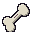
握っていた骨片
眠るまで握っていた、骨の欠片。
二つ・四つ・六つ、違う遺品を持っていると効く（持っているあいだ）
夜目。深淵の中で、灯りの先まで見える。声がたまるのも遅くなる。
足音の警告。近くの深淵の敵が来ると、足もとで鈴が鳴る。
軽い足。深淵の中で、跳ぶと少し高く跳べる。
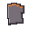
灯りを探した手袋
灰の中に指の跡を残した手袋。最後まで灯りを探していた。
二つ・四つ・六つ、違う遺品を持っていると効く（持っているあいだ）
夜目。深淵の中で、灯りの先まで見える。声がたまるのも遅くなる。
足音の警告。近くの深淵の敵が来ると、足もとで鈴が鳴る。
軽い足。深淵の中で、跳ぶと少し高く跳べる。
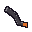
焦げた外套の紐
焦げた外套の紐。拍を数えた指の跡が残っている。
二つ・四つ・六つ、違う遺品を持っていると効く（持っているあいだ）
夜目。深淵の中で、灯りの先まで見える。声がたまるのも遅くなる。
足音の警告。近くの深淵の敵が来ると、足もとで鈴が鳴る。
軽い足。深淵の中で、跳ぶと少し高く跳べる。
白紙の名札
名前を書く前に来た人の、白い名札。
二つ・四つ・六つ、違う遺品を持っていると効く（持っているあいだ）
夜目。深淵の中で、灯りの先まで見える。声がたまるのも遅くなる。
足音の警告。近くの深淵の敵が来ると、足もとで鈴が鳴る。
軽い足。深淵の中で、跳ぶと少し高く跳べる。
空の手燭
灯りの入っていない、小さな手燭。「七度目」の墓のそばにあった。
二つ・四つ・六つ、違う遺品を持っていると効く（持っているあいだ）
夜目。深淵の中で、灯りの先まで見える。声がたまるのも遅くなる。
足音の警告。近くの深淵の敵が来ると、足もとで鈴が鳴る。
軽い足。深淵の中で、跳ぶと少し高く跳べる。
自分と同じ名前の札
名札の一つ。自分と同じ名前で、日付だけが違う。
二つ・四つ・六つ、違う遺品を持っていると効く（持っているあいだ）
夜目。深淵の中で、灯りの先まで見える。声がたまるのも遅くなる。
足音の警告。近くの深淵の敵が来ると、足もとで鈴が鳴る。
軽い足。深淵の中で、跳ぶと少し高く跳べる。
起こし鈴
「次の私が来たら、起こして」。鳴らすと、遠くで返事のような音がした気がする。
二つ・四つ・六つ、違う遺品を持っていると効く（持っているあいだ）
夜目。深淵の中で、灯りの先まで見える。声がたまるのも遅くなる。
足音の警告。近くの深淵の敵が来ると、足もとで鈴が鳴る。
軽い足。深淵の中で、跳ぶと少し高く跳べる。
銅の輪
雷で溶けた名札から、残った銅の輪。
二つ・四つ・六つ、違う遺品を持っていると効く（持っているあいだ）
夜目。深淵の中で、灯りの先まで見える。声がたまるのも遅くなる。
足音の警告。近くの深淵の敵が来ると、足もとで鈴が鳴る。
軽い足。深淵の中で、跳ぶと少し高く跳べる。
衛士の鐘章
アンコモン · 都のまわりの品
必要 Lv 3
装飾の枠に付けているあいだ効く
装飾。体力 +20
「鐘章を下げた者は、都の名で戦う」
草薬の小瓶
アンコモン · 都のまわりの品
必要 Lv 5
護符の枠に付けて [H] で使う
護符（[H] で使う）。使うと体力 +60（待ち 45 秒）
「草の薬は苦い。効くまで飲め」
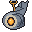
岩鯨の鼓動守
コモン · 岩鯨の専用装備
必要 Lv 8
装飾の枠に付けているあいだ効く
装飾の枠に付けると、心臓との戦いで一度だけ、倒れるはずの一撃を体力 10 で耐える。使うと光って消える
「鼓動はひとつ、おまえのために打ち残してある。」
苔の護石
レア · 岩鯨の専用装備
必要 Lv 8
装飾の枠に付けているあいだ効く
装飾の枠に付けると、苔の上で体力が少しずつ戻る
「苔は、遅いものにだけ根づく。」
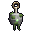
苔玉の根付
レア · 岩鯨の丘陵の品
必要 Lv 8
装飾の枠に付けているあいだ効く
装飾。5 秒ごとに体力 +10
「苔玉は、持ち主の帰り道を光らせる」
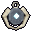
骨掘りの顎飾り
Format error: 装飾。6% の確率で与える傷 +50%、受ける傷 −3%（体力が半分未満で −6%）
レア · 地下のダンジョンの品
必要 Lv 10
装飾の枠に付けているあいだ効く
装飾。6% の確率で与える傷 +50%、受ける傷 −3%（体力が半分未満で −6%）
「坑の主の大顎の欠け。もう骨を噛む音はしない」
岩鯨の補強板
ヒロイック · 岩鯨の専用装備
必要 Lv 10
装飾の枠に付けているあいだ効く
装飾の枠に付けると、岩鯨の甲殻2部位で防具強度+3、4部位でノックバック耐性
「殻を足せば、重さが増すだけだ。それでも。」
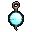
浮き玉の根付
Format error: 装飾。水の中の移動が速い、息が長い、移動 +3%
アンコモン · 潮の浜の品
必要 Lv 12
装飾の枠に付けているあいだ効く
装飾。水の中の移動が速い、息が長い、移動 +3%
「浮き玉は、沈んだ者を探して揺れる」
潮殻の鼓動守
コモン · 潮殻の専用装備
必要 Lv 14
装飾の枠に付けているあいだ効く
装飾の枠に付けると、心臓との戦いで一度だけ、倒れるはずの一撃を体力 10 で耐える。使うと光って消える
「引いた波も、一度だけは引き返す。」
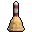
霧鐘の小鈴
レア · 潮の浜の品
必要 Lv 15
護符の枠に付けて [H] で使う
護符（[H] で使う）。使うとまわり 8 の敵を 3 秒 霧で遅く II・目くらみ（待ち 40 秒）
「小鈴を振れば、霧の中で名を呼べる」
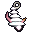
殻負いの螺貝
Format error: 装飾。マナ +10、水の中で息が長く続く、泳ぎ +20%
レア · 地下のダンジョンの品
必要 Lv 16
装飾の枠に付けているあいだ効く
装飾。マナ +10、水の中で息が長く続く、泳ぎ +20%
「耳に当てると、洞の満ち引きが聞こえる」
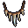
雷狼の牙の首飾り
Format error: 装飾。会心 8%（×1.5）
レア · 嵐の高地の品
必要 Lv 16
装飾の枠に付けているあいだ効く
装飾。会心 8%（×1.5）
「牙の首飾りは、狼の群れを遠ざける」
月潮の真珠
ヒロイック · 潮殻の専用装備
必要 Lv 16
装飾の枠に付けているあいだ効く
装飾の枠に付けていると、傷が深くなったとき泡の盾が身を包む（一度包むと90秒は眠る）
「月が引くものを、泡が覚えている。」
大蟹の甲羅の背当て
Format error: 装飾。強靭 +2、打たれると 15% で棘 3 を返す
エピック · 潮の浜の品
必要 Lv 19
装飾の枠に付けているあいだ効く
装飾。強靭 +2、打たれると 15% で棘 3 を返す
「背中は甲羅に任せて、前だけを見ろ」
雷翼の鼓動守
コモン · 雷翼の専用装備
必要 Lv 20
装飾の枠に付けているあいだ効く
装飾の枠に付けると、心臓との戦いで一度だけ、倒れるはずの一撃を体力 10 で耐える。使うと光って消える
「雷は、落ちる前にためらうことがある。」
嵐纏の足環
エピック · 雷翼の専用装備
必要 Lv 20
装飾の枠に付けているあいだ効く
装飾の枠に付けていると、滑空が速くなり、落ちる傷がやわらぐ
「巡りの輪。落ちる者に、風を貸す。」
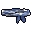
織り紐の腕輪
Format error: 装飾。移動 +5%、落下 −30%
レア · 嵐の高地の品
必要 Lv 22
装飾の枠に付けているあいだ効く
装飾。移動 +5%、落下 −30%
「織り紐は、結んだ願いの数だけ太い」
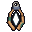
背晶の欠片
Format error: 装飾。技の待ち −4%、雷の傷 −20%
エピック · 地下のダンジョンの品
必要 Lv 22
装飾の枠に付けているあいだ効く
装飾。技の待ち −4%、雷の傷 −20%
「大蜥蜴の背の晶。雷を溜めても、もう鳴らない」
嵐の目の羽根
ヒロイック · 雷翼の専用装備
必要 Lv 22
装飾の枠に付けているあいだ効く
装飾の枠に付けていると、飛んでくる矢や弾を風がそらす（そらすと3秒は眠る）
「嵐の目は、いつもこちらを見ている。」
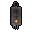
灰の民の祈り札
エピック · 灰の荒野の品
必要 Lv 25
護符の枠に付けて [H] で使う
護符（[H] で使う）。使うと悪い効果を消し、5 秒 耐性 I（待ち 50 秒）
「灰の札は、燃えて初めて願いが届く」
余燼の鼓動守
コモン · 余燼の専用装備
必要 Lv 26
装飾の枠に付けているあいだ効く
装飾の枠に付けると、心臓との戦いで一度だけ、倒れるはずの一撃を体力 10 で耐える。使うと光って消える
「灰の下には、息ひとつぶんの火がいつも残る。」
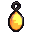
熾り蟲の琥珀
Format error: 装飾。燃えている相手に +10%、火の傷 −15%
エピック · 灰の荒野の品
必要 Lv 26
装飾の枠に付けているあいだ効く
装飾。燃えている相手に +10%、火の傷 −15%
「琥珀の中の蟲は、まだ熱を持つ」
熾火の外套
エピック · 余燼の専用装備
必要 Lv 26
装飾の枠に付けているあいだ効く
装飾の枠に付けていると、熱がたまりにくく、火と溶岩の傷がやわらぐ（火そのものは防がない）
「裏地には、まだ私の体温がある。」
炉の熾
Format error: 装飾。体力 +24、火の傷 −30%
エピック · 地下のダンジョンの品
必要 Lv 28
装飾の枠に付けているあいだ効く
装飾。体力 +24、火の傷 −30%
「巨人の炉に残った熾。灰の民の坑の最後の火」
余燼の灯
ヒロイック · 余燼の専用装備
必要 Lv 28
装飾の枠に付けているあいだ効く
装飾の枠に付けていると、倒れるほどの傷を一度だけこらえ、まわりを焼く（一度燃えると600秒は眠る）
「灯は、倒れる前に一度だけ吠える。」
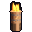
峰の狼煙筒
Format error: 護符（[H] で使う）。使うと 8 秒 まわり 8 の仲間（自分も）の与える傷 +15%（待ち 60 秒）
ヒロイック · 嵐の高地の品
必要 Lv 29
護符の枠に付けて [H] で使う
護符（[H] で使う）。使うと 8 秒 まわり 8 の仲間（自分も）の与える傷 +15%（待ち 60 秒）
「狼煙は、峰から峰へ助けを渡す」
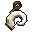
雷角の角笛
Format error: 装飾。体力が半分を切ると与える傷 +15%、強靭 +2
ヒロイック · 嵐の高地の品
必要 Lv 30
装飾の枠に付けているあいだ効く
装飾。体力が半分を切ると与える傷 +15%、強靭 +2
「角笛を吹けば、峰じゅうの羊が振り向く」
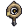
測り縄の輪
Format error: 装飾。落下 −50%、暗い所で暗視
レア · 深淵の上の層の品
必要 Lv 32
装飾の枠に付けているあいだ効く
装飾。落下 −50%、暗い所で暗視
「測り縄は、淵の深さを数え続ける」
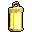
灯籠の小灯
Format error: 護符（[H] で使う）。使うと 10 秒 まわりを照らし、まわり 10 の敵に印（仲間全員の傷 +10%）（待ち 45 秒）
レア · 深淵の上の層の品
必要 Lv 33
護符の枠に付けて [H] で使う
護符（[H] で使う）。使うと 10 秒 まわりを照らし、まわり 10 の敵に印（仲間全員の傷 +10%）（待ち 45 秒）
「小さな灯でも、淵の闇を一つ減らす」
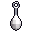
塩の涙の耳飾り
Format error: 装飾。マナの戻り +15%、マナの上限 +6
エピック · 深淵の上の層の品
必要 Lv 35
装飾の枠に付けているあいだ効く
装飾。マナの戻り +15%、マナの上限 +6
「塩の涙は、耳もとで泣き声を立てる」
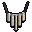
骨笛の首飾り
Format error: 装飾。暗い所で与える傷 +10%
エピック · 深淵の上の層の品
必要 Lv 38
装飾の枠に付けているあいだ効く
装飾。暗い所で与える傷 +10%
「骨笛は、吹かなくても胸で鳴る」
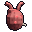
脈打つ偽の心臓
Format error: 護符（[H] で使う）。使うと体力を上限の 50% 戻す（待ち 120 秒）
ヒロイック · 深淵の上の層の品
必要 Lv 39
護符の枠に付けて [H] で使う
護符（[H] で使う）。使うと体力を上限の 50% 戻す（待ち 120 秒）
「偽の心臓は、本物より強く打つ」
鼓動の聴き筒
Format error: 装飾の枠に付けていると、4 秒ごとに 12 ブロック内の敵の鼓動を聞き、壁の向こうでも輪郭を光らせる。深淵では闇のたまり −15%
エピック · 深淵の専用装備
必要 Lv 40
装飾の枠に付けているあいだ効く
装飾の枠に付けていると、4 秒ごとに 12 ブロック内の敵の鼓動を聞き、壁の向こうでも輪郭を光らせる。深淵では闇のたまり −15%
「聞こえる鼓動は、ひとつではない。」
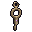
縄の人の結び目
Format error: 装飾。倒れる傷を体力 10 で耐えて後ろへ跳ぶ（待ち 240 秒）、移動 +4%
ヒロイック · 深淵の上の層の品
必要 Lv 40
装飾の枠に付けているあいだ効く
装飾。倒れる傷を体力 10 で耐えて後ろへ跳ぶ（待ち 240 秒）、移動 +4%
「解けない結び目は、解いてはいけない」
雷管石の首飾り
Format error: 装飾。雷の傷 −30%、打たれると 10% で雷を返す
レア · 深淵の下の層の品
必要 Lv 42
装飾の枠に付けているあいだ効く
装飾。雷の傷 −30%、打たれると 10% で雷を返す
「雷管石は、雷が通った道の形」
測量士の錘
Format error: 装飾の枠に付けていると、深いほど与える傷が増える（深淵では深さ 40 ごとに +1%、最大 +12%。地上では y 64 から 16 下がるごとに +1%、最大 +8%）。落下の傷 −30%
ヒロイック · 深淵の専用装備
必要 Lv 42
装飾の枠に付けているあいだ効く
装飾の枠に付けていると、深いほど与える傷が増える（深淵では深さ 40 ごとに +1%、最大 +12%。地上では y 64 から 16 下がるごとに +1%、最大 +8%）。落下の傷 −30%
「錘は嘘をつかない。深さだけを告げる。」
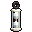
灰の砂時計の飾り
Format error: 装飾。技の待ち −8%
エピック · 深淵の下の層の品
必要 Lv 44
装飾の枠に付けているあいだ効く
装飾。技の待ち −8%
「灰の砂が落ちきる前に、戻ってこい」
星図の羅針盤
エピック · 深淵の下の層の品
必要 Lv 45
護符の枠に付けて [H] で使う
護符（[H] で使う）。使うと向いた方へ 8 ブロック跳ぶ（待ち 20 秒）
「星図の針は、まだ見ぬ星を指す」
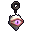
深みの眼の護り
Format error: 装飾。会心 12%（×1.6）
エピック · 深淵の下の層の品
必要 Lv 46
装飾の枠に付けているあいだ効く
装飾。会心 12%（×1.6）
「深みの眼に見張らせれば、背は安全」
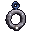
隕鉄の環
Format error: 装飾。体力 +60、強靭 +2、受ける傷 −5%（体力半分未満で −10%）
ヒロイック · 月の面の品
必要 Lv 48
装飾の枠に付けているあいだ効く
装飾。体力 +60、強靭 +2、受ける傷 −5%（体力半分未満で −10%）
「隕鉄の環は、月の引く方へ傾く」
月の砂時計
ヒロイック · 月の面の品
必要 Lv 49
護符の枠に付けて [H] で使う
護符（[H] で使う）。使うとまわり 10 の敵の時を 3 秒止める（主は 1 秒）（待ち 75 秒）
「月の砂時計は、満ち欠けで時を測る」
満月の環
ヒロイック · 月の専用装備
必要 Lv 50
装飾の枠に付けているあいだ効く
満月の石を抱いた銀の環。月の上か夜のあいだ、3 秒ごとに体力 1 回復 (満月の位相では 2 秒ごと)。
「巡る月を、指の上で止めておく。」
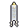
雲上の祝詞の札
Format error: 護符（[H] で使う）。使うとまわり 10 の仲間（自分も）の体力 +100、8 秒 受ける傷 −20%（待ち 90 秒）
ヒロイック · 雲海の品
必要 Lv 50
護符の枠に付けて [H] で使う
護符（[H] で使う）。使うとまわり 10 の仲間（自分も）の体力 +100、8 秒 受ける傷 −20%（待ち 90 秒）
「祝詞の札は、巡礼者の道の守り」
雲雀の羽根飾り
Format error: 装飾。落下の傷なし、移動 +8%
ヒロイック · 雲海の品
必要 Lv 50
装飾の枠に付けているあいだ効く
装飾。落下の傷なし、移動 +8%
「雲雀の羽根は、雲の上の歌を覚えている」
天の環
Format error: 白い羽を開いた金の環。体力が満ちているあいだ、与える傷 +8%。
神器 · あいだの塔
必要 Lv 50
装飾の枠に付けているあいだ効く
白い羽を開いた金の環。体力が満ちているあいだ、与える傷 +8%。
「満ちた者だけが、天に手を伸ばせる。」
巡礼の羽飾り
Format error: 金の軸の白い風切羽。落ちる傷が無くなる。空中で打つ傷 +8%。
神器 · 雲海の神器
必要 Lv 50
装飾の枠に付けているあいだ効く
金の軸の白い風切羽。落ちる傷が無くなる。空中で打つ傷 +8%。
「巡礼者は落ちても、羽が受け止めた。」
淵の鎖
神器 · あいだの塔
必要 Lv 50
装飾の枠に付けているあいだ効く
黒い石の輪をつないだ鎖。体力が 3 割以下のあいだ、受ける傷 ×0.80。
「落ちかけた者を、淵がつなぎとめる。」
約束の小鈴
神器 · 雲海の神器
必要 Lv 50
装飾の枠に付けているあいだ効く
四つの灯を連れた金の小鈴。倒れた仲間を起こす速さ ×1.5。起こした仲間に守り 3 秒 (受ける傷 ×0.7)。
「鳴らせば、前の自分たちが手を貸す。」